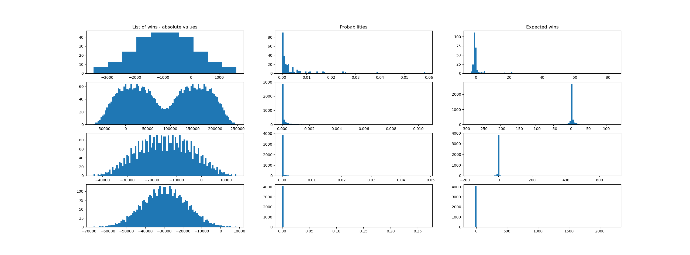
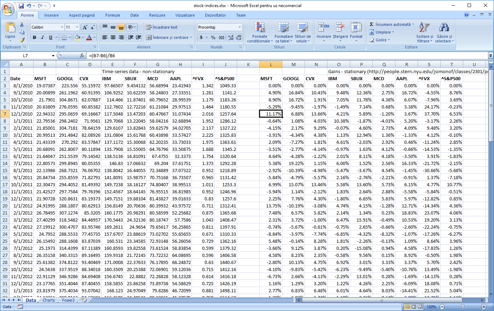
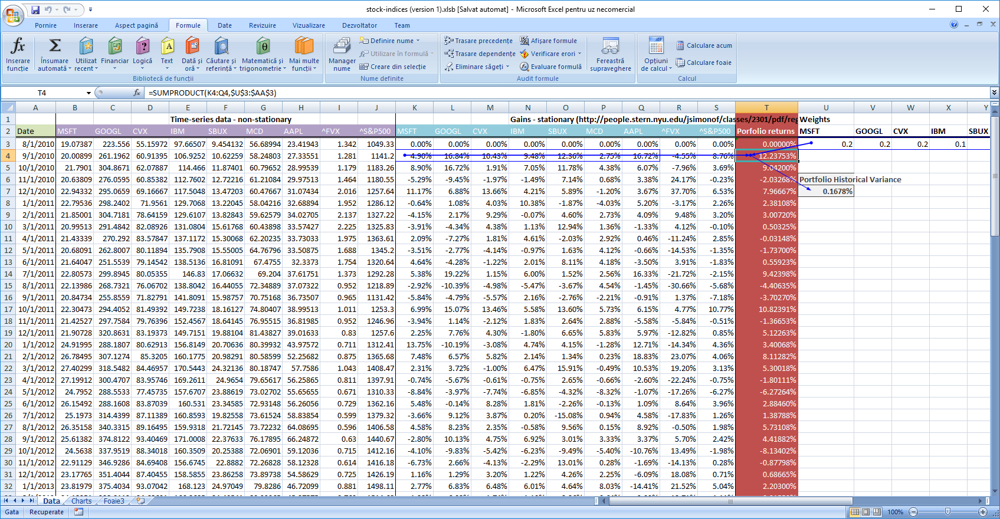
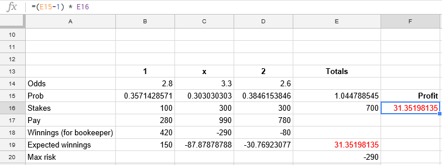
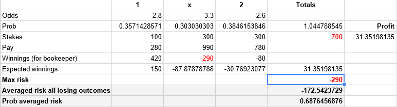
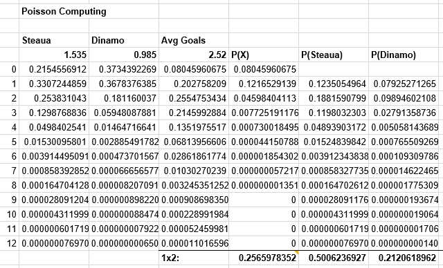
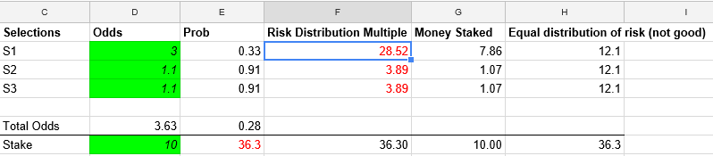
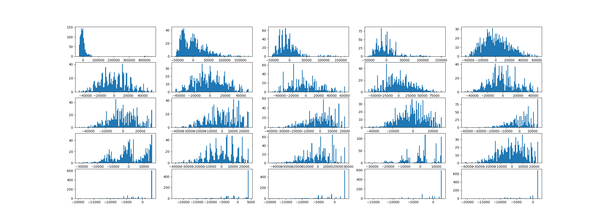
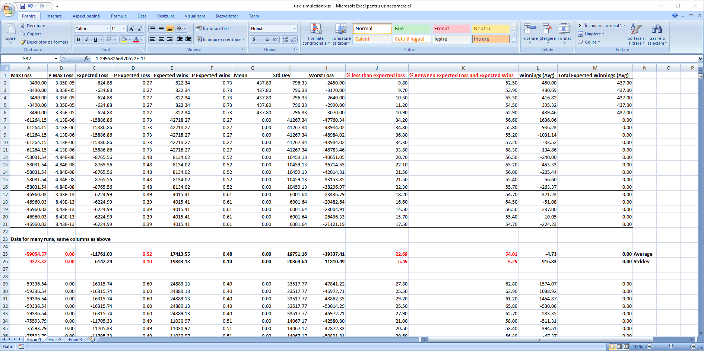
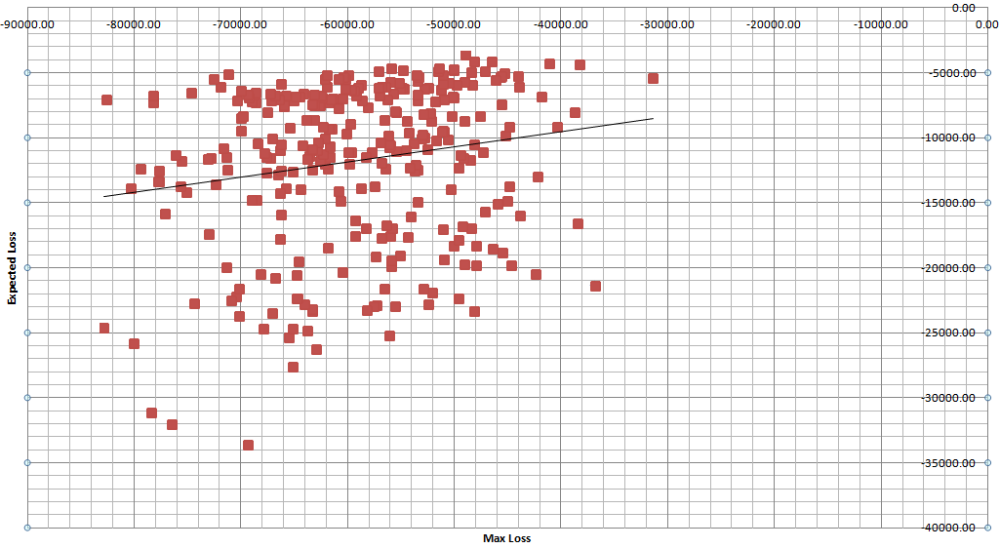

Risk Models
A not-so-short discussion about finanical risk, starting from computing the risk for a portfolio of stocks and discussing which ideas might be applied to modelling risk for a sportsbook. Many points presented here have not been tested in production or on real datasets.
A sportsbook can be seen as a portfolio of bets on a set of markets, each with an expected positive return for the bookmaker. But things can turn south and losses do occur. We need to limit such momentary losses so that the sportsbook remains profitable on the long run. However, simply summing up the worst case loss on each match may be too restrictive since there are tens of thousands of events happening every month and the probability of an extreme loss at any given period is tiny, but the same tens of thousands of events mean that extreme situations do occur. If the total risk is seen as too extreme and too improbable, the traders might be incetivised to simply ignore it and to increase the risk limits blindly, thus opening the gates to unquantified losses. Similarly, if we stick to risk limits that are too restrictive, we might miss the oportunity to make profit in otherwise highly profitable markets.
Risk
Risk is a way to quantify uncertainty given a set of possible outcomes. A common way to quantify risk is by using the standard deviation. However, a poorly constructed risk model can lead to major financial failures. Risks is derived from uncertainty. Whenever there is an uncertainty regarding an outcome, there is a risk associated with it. Risk can estimated based on a probabilistic model and expressed as probabilities and consequences for a specific set of outcomes.
Several values come to mind when speaking of the set of possible outcomes:
- Worst case (maximul loss, if worst case < 0)
- Best case (maximum win, if best case > 0)
- Expected case (the probability-weighted average of all possible outcomes)
- Range, the best case minus the worst case, but highly affected by outliers
- Variance and stardard deviation. However they tend to hide extreme risks, like the low but still possible risk of getting bankrupt.
When computing the variance, it is important to verify if it makes sense to use Bessel's correction. Yes, if we assess the risk based on a subset of a larger population, no if the population is fixed and we cover the whole set of possible outcomes.
We define a portfolio as a set of assets that vary their prices based on two large categories of factors - indiosyncratic (specific to the asset at hand) and systemic (not-specific). As an example, we can consider the team form as an example of idiosyncratic factor and a certain market preference for a specific team as a systemic factor for the finanical risks associated with a portfolio of bets.
Note: we have a natural bias for identifying fake cause-effect relationships attributed solely to idiosyncratic factors, e.g. "X failed because of his own behavior", whereas in most cases the systemic factors far outweight the individual factors. However, it seems it is very hard for us humans to have a good grasp of the properties of the system as a whole, as these cannot be attributed solely to obsevable individuals, but rather to the invisible relationships between individuals. When I say "individuals", they can be humans if we talk about social systems, computers or software in IT systems or any other uniquely identifiable element in a configuration that can be bounded (which we like) or unbounded (which we don't like and which usually is the case as systems don't exist in a vacuum, but rather are part of a larger network of systems).
Note 2: it is a bad idea to bet with borrowed money that tomorrow will look like yesterday.
Risk in a portfolio of stocks as compared to the sportsbook risk
What we want to do is to be able to issue statements like: the probability to lose X mount of money or more in the following T period is p%. This amount of money, X, is called value at risk.
The important thing to notice is that a portfolio can be modelled as a sum of random variables. Unlike the sportsbook portfolio where the outcome of each sport event is a discrete random variable, with a finite set of possibilities, stock movement can be thought as a continuous random variable. However, given the sheer number of sport events and their continuous flux, intuition tells me there are parallels to be made between studying financial risk models and sportsbook risk models.
For the stock portfolio, we will assume the distribution of stock movement to be normal, although its use is questionable, as it seems that extreme events in this space are more frequent than what it predicts.
In this case, VaR(p%) = X = Amount-Of-Money-Invested * Zscore(p%) * sigma, where Zscore(p%) is the amount of standard deviations corresponding to the probability p. Thus, the only thing we need to compute is sigma = sqrt(Var(P)).
In the case of the sportsbook, we have a large discrete set of possible losses and wins, each with a probability that can be numerically computed. However, computing this set is not computationally effective as the tree of possibilities doubles with each additional event. For instance, in the small case of a portfolio of only 10 binomial independent events, the cardinality of the set of possible outcomes is 2^10 = 1024. Thus, we need to seek alternative means of computing the VaR. A simple model to be tested in practice would be to compute the risk for the worst possible scenario (sum of all maximum losses), compute its probability (product of all probabilities of the worst possible outcomes) and given this probability compute its Zscore and thus distribute risks accordingly. However, such a model might prove to hide too much error due to the extreme values and simplistic assumptions baked into it. Another option might be to sample the distribution of returns, let's say to compute 1000 random returns / losses for 1000 events, assume them equiprobable, and compute the variance based on these. These would, additionally, give us a hint at the shape of the real distribution, so we might have the option to not consider the normal distribution. We can push this model even further, selectively picking the most extreme cases (wins / loses), leading to a lobed distribution, with inflated tails.
However, the two options above are mostly invalidated by practice. Below is a run for a simulation of 4 sets of different matches (win-lose), each described by the tuple (prob_loss, loss_value, prob_win = 1- prob_loss, win_value). The rows (series) are as follows:
1. small number of 8 matches, prob of loss small and the possible loss value large, which leads to 2^8=256 outcomes
2. small set of 12 matches, prob of loss and prob of win distributed evenly, thus also the win / loss values are similarly matched. In total, 2^12=4096 possible outcomes
3. small set of 12 matches, prob of loss limited to 0.5% per match. In total, 2^12=4096 possible outcomes
3. small set of 12 matches, prob of loss limited to 0.2% match (unprobable high losses, paired by probable smaller wins). In total, 2^12=4096 possible outcomes.
Code below:
"""
The following code assumes a series of independent matches, each modeled as a tuple (p_loss, loss, won), with p_won assumed to be 1-p_loss. Each event is a Bernoulli trial.
"""
from functools import reduce
from random import random
from matplotlib import pyplot as plt
import statistics as stats
def prob_tree(risks: list):
""" element in risks is (prob_loss, value_loss, value_won) """
if len(risks) == 0:
raise Exception("cannot handle")
pl, vl, w = risks[0]
if len(risks) == 1:
yield [(pl, vl)]
yield [(1-pl, w)]
else:
for remaining in prob_tree(risks[1:]):
yield [(pl, vl)] + remaining # event happened (event == loss)
yield [(1-pl, w)] + remaining # event did not happen
def gen_disjoint_events(risks: list):
""" element in risks is (prob_loss, value_loss, value_won) """
for r in prob_tree(risks):
p = reduce(lambda a, b: a * b, (p_ for p_, _ in r))
v = sum(v_ for _, v_ in r)
yield (p, v)
def display_cases(rows: list):
""" Shows the nice charts """
row_cnt = len(rows)
fig, ax = plt.subplots(row_cnt, 3)
for i in range (0, row_cnt):
list_of_wins = rows[i][0]
list_of_probs = rows[i][1]
list_of_expected = rows[i][2]
print("Mean: {}, Stddev: {}".format(stats.mean(list_of_expected), stats.stdev(list_of_expected)))
p = ax[i][0]
if i == 0: p.set_title("List of wins - absolute values")
p.hist(list_of_wins, 10 if len(list_of_wins) < 1000 else 100)
p = ax[i][1]
if i == 0: p.set_title("Probabilities")
p.hist(list_of_probs, 100)
p = ax[i][2]
if i == 0: p.set_title("Expected wins")
p.hist(list_of_expected, 100)
plt.show()
def gen_statistics(matches: list):
disjoin_events = [x for x in gen_disjoint_events(matches)]
return ([v for p, v in disjoin_events], [p for p, v in disjoin_events], [p*v for p, v in disjoin_events])
def gen_matches(cnt, max_loss_prob):
ret = []
for i in range(0, cnt):
p_loss = random() * max_loss_prob
loss = -random() * 10000
win = -loss * p_loss / (1-p_loss)
ret.append((p_loss, loss, win))
return ret
if __name__ == "__main__":
# small number of matches
matches = [
[(0.2, -750, 300), (0.3, -200, 300), (0.3, -220, 100), (0.6, -80, 110), (0.1, -1050, 300), (0.2, -550, 300), (0.31, -520, 100), (0.5, -120, 110)],
gen_matches(12, 1),
gen_matches(12, 0.5),
gen_matches(12, 0.2)
]
plots = []
for match in matches:
plots.append(gen_statistics(match))
display_cases(plots)
print("Done")

But until then, let's return to our stock risk model as the results are pretty interesting.
Risk in a portfolio of stocks
The principles behind assessing the risk in a portfolio of stocks for our simple model are:
- Learn from history (identify relationships) but do not count on it repeating. Historical based VaR often underestimates the worst case.
- Identify underlying risk factors
- Stress-test each risk factor
Theorem:
Given a random variable Y expressed as a sum of Xi random variables, Y = X1 + X2 + ... Xn, Variance(Y) = Covariance(X1, X1) + Covariance(X1, X2) + ... + Covariance(Xn, Xn), in total n^2 terms. If X1...Xn are fully independent, Covariance(Xi, Xj) = 0 with i=1..n and j=1..n and i!=j. In this case, the result can be written as Variance(Y) = Variance(X1) + Variance(X2) + .... Variance(Xn) since Covariance(Xi, Xi) = Variance(Xi).
If Y = w1 * X1 + w2 * X2 + ...+ wn * Xn, Variance(Y) = sum(wi * wj * Covariance(Xi, Xj) for i = 1..n, j = 1..n) or, in matrix terms, Variance(Y) = W * COV_MTX(X) * WT where W = [w1 ... wn], X = [x1 ... Xn], COV_MTX is the covariance matrix and WT is W transposed.
The Model:
We consider two systemic risks, the overal "market sentiment", as captured by S&P500, and the overall level of interest rates in the economy, as captured by FVX. If the whole market goes up (S&P500 goes up), it is a reasonable expectation that our stock portfolio will also go up. If the interest rates go up, interest in stocks tends to decrease while interest in bonds tends to increase.
We aim to express the returns of each of our stocks as a linear regression based on the factors identified above, as follows (Yi is the return of stock i in our portfolio). The return value of our portfolio over a period of time is P = w1 * Y1 + w2 * Y2 + ... where wi is the amount of money invested in that particular stock, with sum(wi) = W, our invested sum and Yi the variation expressed in percentages of that particular stock. Thus, the end value of our portfolio would be S(t + dt) = W + P, with W = S(t).
We consider a multiple linear regression model:
-
Yi = Ai + Bi1*F1 + Bi2*F2 + e_i,Abeing called theAlpha, meaning the stock specific performance,Bbeing calledBeta, meaning the market performance as a whole, andea residual stock-specific factor, derived from its idiosyncratic risks. Discussion about multiple regression here. -
Var(Yi) = Var(Ai + Bi1*F1 + Bi2*F2) + Var(e_i), withAia constant, ande_ithe idiosyncratic factor, withTotalVariance(Y) = SystemicVariance(Y) + IdiosyncraticVariance(Y). We can write like this since we assume the idiosyncratic and the systemic risks are fully independent. -
Since the idiosyncratic risk is individual (independent) for each stock type, we can compute its variance as
Var( sum(e_i, i=1..n) ) = IdiosyncraticVariance(Y) = sum(wi^2 * Var(e_i), i=1..n). -
Var(Ai + Bi1*F1 + Bi2*F2) = SystemicVariance(Y) = Var(Ai) + Var(Bi1*F1 + Bi2*F2) = 0 + Var(Bi1*F1 + Bi2*F2), sinceAiis a constant.
For our value at risk calculation, we will assume the portfolio returns to be normally distributed and centered around 0 - no loss, no gain. In the case of a sportsbook, we can also consider the returns to be centered around the Expected Value of the portfolio, which should be above 0. This choice (0 or EV) is detabatable and should be tested both through simulation and with real data.
Steps taken:
- Aquire data and transform from non-stationary data to stationary. Usually one cannot use timeseries data directly for mathematical models such as regression because data from one point to the next is not independent. However, converting to returns, with
return=(new_data - old_data) / old_data, yields a much higher level of independence from one point to the next. E.g. temperature at momentt+dtis clearly dependent on temperature at momentt, whereas temperature gains / loss are not. Data is downloaded from Yahoo finance.

- Model historical relationships: we have seen that
Variance(Y) = W * COV_MTX(X) * WT, so we can assign theWvector to the weights we have in our porfolio (a good exercise is to determine these weights so that we maximize the return and minimize the risk) and compute theCOV_MTX(X). Now we can compute ourVar(Y)which is our historical portfolio variance. This can be done in a simpler way bydot-ing (sum-product) the weight for each stock with the yield of each stock on a monthly basis to compute the monthly yield, and then computing the variation for the yields series. In such case, the covariance matrix formula might seem an overkill. However, if we are to do the reverse analysis, to compute the weights to optimize for risk or yield, the advantage of the cov-matrix approach quickly become apparent, considering the case in which the number of data points is much larger than the number of stocks in our portfolio. In the covariance matrix scenario, the complex calculation which involves the whole time series is performed only once, in the beginning. Then, for each change in weights, we would simply do 3 matrix multiplications. Simple approach, below. Numbers downloaded from Yahoo! Finance. Excel file here

And the python code:
import pandas as pd
import numpy as np
df = pd.read_csv('stock-indices.csv')
columns = list(df)
date = columns[0]
stocks = columns[1:-2]
indices = columns[-2:]
# convert first column to date by default it is dtype('O'), python object and make sure the set is sorted
df[date] = pd.to_datetime(df[date], format="%m/%d/%Y")
df = df.sort_values([date], ascending=[True])
# compute the returns for each stock
prev = df[stocks+indices]
current = df[stocks+indices].shift(-1) # reindex the data, because data is added index-wise
returns = ((current - prev) / prev)[:-1] #last one is nan
# to simplify, we set weights to the same numbers as in excel so we can verify our calculations
weights = pd.Series([0.2, 0.2, 0.2, 0.1, 0.1, 0.1, 0.1], index=["MSFT", "GOOGL", "CVX", "IBM", "SBUX", "MCD", "AAPL"])
cov = returns[stocks].cov()
# for computing the covariance matrix I have another blog post
variance = (weights.dot(cov).dot(weights.T))*100
print("Historical variance: {}%".format(variance)) # similar to excel
- Create a systemic factor model based on S&P500 and FVX:
# we do the factor analysis for F1 = S&P and F2 = FXV
# Yi = A + B1 * F1 + B2 * F2, with Y = return of stock Yi
# returns[stocks] = A + returns["^S&P500"] + returns["^FVX"]
def idiosyncratic_variance(Y, As, Bs, Fs, W):
Y = Y.values.T
Fs = Fs.values.T
Bs = Bs.values
W = W.values.T
As = np.repeat(As.values, Y.shape[1], axis = 1)
residuals = np.var(Y - As - np.dot(Bs, Fs), axis=1)
ret = W * residuals * W
return np.sum(ret)
def cov(_x, _y):
x = _x.flatten()
y = _y.flatten()
if x.size != y.size:
raise Exception("x and y should have the same size")
mean_x = np.mean(x)
mean_y = np.mean(y)
N = x.size
return (1 / N) * np.sum((x - mean_x) * (y - mean_y))
def cov_mtx(X, Y):
return np.array([[cov(x, y) for y in Y] for x in X])
def lin_regress_mtx(Y, Fs):
# Multiple regression: Y = As + sum(i, Bi * Fi)
# Bs = cov(Y, F) * cov (F, F)^(-1)
# As = mean_Y - sum(bi * mean_xi)
# convert to numpy array
Y = Y.values.T
Fs = Fs.values.T
Cxx = cov_mtx(Fs, Fs)
Cyx = cov_mtx(Y, Fs)
Bs = Cyx.dot(np.linalg.inv(Cxx))
mean_Fs = np.mean(Fs, axis=1)
As = np.array([[np.mean(y) - np.dot(bs, mean_Fs)] for y, bs in zip(Y, Bs)])
return pd.DataFrame(np.hstack((As, Bs)))
coef_matrix = lin_regress_mtx(returns[stocks], returns[indices])
# compute the variance
Bs = coef_matrix[[1,2]]
As = coef_matrix[[0]]
reconstructedCovariance = np.dot(np.dot(Bs, returns[indices].cov()), Bs.T)
systemic_var = (weights.dot(reconstructedCovariance).dot(weights.T)) * 100
idiosync_var = idiosyncratic_variance(returns[stocks], As , Bs, returns[indices], weights) * 100
f_based_variance = systemic_var + idiosync_var
print("Factor based variance: {}%".format(f_based_variance)) # rather similar to historic risk
- Compute a stress test based portfolio variance. The process is described below:
- Find the minimum for the
S&Pand the minimum for theFVX. - Find the maximul for the
S&Pand the maximum for theFVX. - Divide each interval in, let's say,
30increments and obtain30*30pairs. - Apply our factor model (
AsandBsobtained in the previous step) for each of these values and compute the returns for each stock. We will simply discard the idiosyncratic factor, as we don't have information about it and should be small anyway. - Use the steps from computing the historic variance to compute the new portfolio variance.
- Compare this variance to the previous two. This one should be more extreme.
- Consider using this variance for computing the
VaRfor our portfolio.
- Compute and interpret VaR
```python
def value_at_risk(portfolio_sum, variance, confidence_level, no_of_periods = 1):
import scipy.stats as st
zscore = st.norm.ppf(1-confidence_level, 0, 1)
sigma = np.sqrt(variance)
return np.abs(portfolio_sum * zscore * sigma * np.sqrt(no_of_periods))
s = df.iloc[-1][stocks]
portfolio_sum = np.sum((s * weights).values)
var99 = value_at_risk(portfolio_sum, f_based_variance / 100, 0.99, 1) # / 100 because it was in percentage
```
The var99 number tells us that the probability to lose a value equal to var99 or greater in the following period is 1%. With our numbers, the var99 value is 28.68, with a total portfolio sum equal to 345.
Sportsbook risk
The goal of a sportsbook is to secure a long-term profit by adding a small margin to each betting market, while not running out of business due to losses on any single day. The main cycle is:
- Select a match and a market and compute a set of probabilities for each possible outcome to occur.
- Compute the odds by artificially increasing the probability of each outcome to secure long term profit (e.g., for a fair coin toss, instead of offering odds at 2.0, a sportsbook might decide to offer odds at 1.9, securing a long-term 10 cent profit for each game). This notion is called overround and is computed below.
- Accept bets
def overround(self):
return sum((1/o for o in self.odds)) - 1

The sportsbook might not accurately determine the real odds odds or the market might have a strong preference towards a specific outcome. Like, for instance, in the example above, the coin might not be fair or the population might have a bias towards head due to some unknown factor. In these conditions, on that specific game, the sportsbook might lose money. In order to limit the risk of going bankrupt, the sportsbook has two strategies: decrease the odds for the preferred outcome thus incetivising people to bet on the other or stop accepting bets when a risk threshold is reached.
The role of the risk model is to prevent the sportsbook from going bankrupt and, in general, has two components: a) limit the stakes placed on each bet so that the risk budget is not in danger of being exceeded and b) when the risk is reached on a specific market, suspend betting on the culprit outcome. The risk model is dynamic, it is updated with each incoming bet and with each settled bet. Since the amount of calculation can be pretty high, it might be delayed until a certain threshold is reached (a batch of bets being placed), but this is an implementation detail and does not impact the actual model behind.
Sportsbook data model
We will consider a rather simple domain model for our sportsbook, composed of the following domain objects:
- Sportsbook - the aggregate root for this bounded context
- Discipline - the type of sport, like football, basketball, tennis.
- League - A discipline can have many leagues, but a league can only have one discipline. E.g, Champions League.
- Match - A match is part of a league. A league can have multiple matches, but a match can only be part of a single league.
- Outcome - some event that can occur and on which one can offer bets.
- Team / Participant - A discipline can have several teams, but a team is part of a single discipline. A match has one or more participants.
- Market - a set of 2 or more mutually exclusive outcomes offered for betting on. A match can have multiple markets. An outcome can be found in several markets.
- Selection - a combination of a Match / Market / Outcome.
- Bet - a combination of 1 or multiple selections.
We will also consider only score-based markets, like 1x2, over-under, correct score. We will use strings for IDs so things are easy to follow and debug. For the sake of this example, we will leave aside other entities that would make a more complete and functional model, which for sure will include:
- Event part - A time-based part of a match, e.g. first part, second part, ordinary time, extension, first set, etc.
- Market template - build betting markets based on a set of common parameters, like 1x2, which can be offered on a wide variety of matches.
etc.
Some code snippets for placing and managing bets. As usual, we start by analysing usage. Throught our model, we will use this custom dictionary class to hold related objects.
class CustomDict(dict):
def __init__(self, *args, **kwargs):
super(CustomDict, self).__init__(*args, **kwargs)
def get_or_create(self, key: str, b_create: bool, create_func: Callable):
ret = self.get(key)
if ret is None and b_create is True:
ret = create_func()
self[key] = ret
return ret
The object model follows an implementation pattern like the following:
class Sportsbook:
""" Main class for the application. Allows placing bets, updating odds, settling bets, computing risk """
__slots__ = ["disciplines"]
def __init__(self, disciplines: list = []):
# A tree of model entities, accessible by a string key.
self.disciplines = CustomDict({ name : Discipline(name) for name in disciplines })
def get_discipline(self, discipline: str, create_on_missing) -> Discipline:
return self.disciplines.get_or_create(discipline, create_on_missing, lambda: Discipline(discipline))
def get_matches(self, discipline: str, league: str, create_on_missing = False) -> Matches:
""" a shorcut, so we don't always query by discipline and leagues"""
disc = self.get_discipline(discipline, create_on_missing)
lg = disc.get_league(league, create_on_missing)
return Matches(disc, lg)
def get_market_templates(self, discipline: str, league: str):
""" returns a function! the reason is that for each match, each market will be created specifically.
do not mistake market for market template"""
return lambda: [Market('1x2'), Market('OverUnder-1.5'), Market('CorrectScore-0-0')]
if __name__ == "__main__":
sportsbook = Sportsbook()
teams = ["steaua", "dinamo", "iasi", "cluj"]
mkt_templates = sportsbook.get_market_templates("football", "ro") # disciline, league
matches = sportsbook.get_matches("football", "ro", True)
# generate league matches, with their respective templates
for m in itertools.permutations(teams, 2):
matches.create(m[0], m[1], mkt_templates)
matches.set_odds('steaua', 'dinamo', '1x2', [2.1, 2.8, 3.5])
matches.set_odds('steaua', 'iasi', '1x2', [2.1, 2.8, 3.5])
matches.set_odds('steaua', 'cluj', '1x2', [2.1, 2.8, 3.5])
matches.set_odds('iasi', 'dinamo', '1x2', [2.1, 2.8, 3.5])
# we will use these selections to place bets
# number of the end is the outcome ID from th respective market. 0 -> 1, x->1, 1->2
s1 = matches.create_selection('steaua', 'dinamo', '1x2', 0)
s2 = matches.create_selection('steaua', 'dinamo', '1x2', 1)
s3 = matches.create_selection('steaua', 'dinamo', '1x2', 2)
s4 = matches.create_selection('iasi', 'dinamo', '1x2', 0)
# betslip single
bet = sportsbook.place_single(s1, 10)
print("Expected wins:", bet.payout())
print("Market risk: {}".format(matches.get_market('steaua', 'dinamo', "1x2").market_risk()))
# betslip multiple
bet = sportsbook.place_multiple([s1, s2, s3] , 10)
print("Expected wins:", bet.payout())
# betslip system
# we keep the variable assignment for inspection with the debugger
system = sportsbook.place_system([s1, s2, s3], 10, 0)
system = sportsbook.place_system([s2, s3, s4], 10, 1)
system = sportsbook.place_system([s2, s3, s4], 10, 2)
system = sportsbook.place_system([s2, s3, s4], 10, 3)
# risk
print("Market risk: {}".format(matches.get_market('steaua', 'dinamo', "1x2").market_risk()))
print("Football risk: {}".format(matches.discipline.discipline_risk()))
Also, since we touched the bet placement topic, here are the place bet methods (single, multiple, system):
def generate_system(self, selections, stake, n):
""" Generates an n-way system bet based on the selections list """
if n == 0:
return [Bet(selections, stake)]
sel_cnt = len(selections)
if n > sel_cnt:
raise Exception("Number of bets is larger than the number of selections")
bet_combinations = list(itertools.combinations(selections, n))
stake = stake * len(bet_combinations) / sel_cnt
return [Bet(sels, stake) for sels in bet_combinations]
def place_bet(self, selections, stake, n_way_system = 0):
if n_way_system > len(selections):
raise Exception("Invalid system bet")
# check if the odds are within market + threshold
for s in selections:
s.check_odds()
bets = self.generate_system(selections, stake, n_way_system)
selections = [s for b in bets for s in b.selections]
# check the risk; this method throws but does not alter the state of the market
for s in selections:
s.market.check_risk(s.outcome_id, s.odds, s.stake)
# commit risk; this method should not throw
for s in selections:
s.market.commit_selection(s.outcome_id, s.odds, s.stake)
# TODO: store the bets
return bets
def place_single(self, selection, stake: float):
return self.place_bet([selection], stake)[0]
def place_multiple(self, selections: list, stake: float):
return self.place_bet(selections, stake)[0]
def place_system(self, selections: list, stake: float, n_way_system: int):
return self.place_bet(selections, stake, n_way_system)
Risk at match and market level
Given a market with 3 disjoined outcomes, like 1x2, one can calculate the risk as follows:

The formulas are quite self explanatory. There is an amount which was taken from the players, the sum of all stakes. And then there are specific amounts that need to be paid to the bettors for each outcome that might occur. For each of these outcomes, we substract the money due from the total stakes and some outcomes will be positive for us and some negative, meaning we lose money if that outcome occurs. The risk is the maximum loss that can occur. I find it interesting to also compute an "expected risk" value. This value has a higher probability (sum of all probabilities where losses can occur) at the expense of a lower sum. Given the higher probability, I think this number can give a certain indication that losses can truly occur on this market.
Obviously, score-based markets are connected to each other. One match cannot have both 0-1 correct score happening and 1 or x from 1x2 occuring at the same time. Just the same, one cannot have 1-0 correct score occuring and over 2 occuring at the same time. Factoring in these relationships, the sports book can more accurately predict the actual risk on a match. In our example, by simply including the correct score market inside the 1x2 market and inside the over-under budget and then substracting it once from the total risk budget, we can remove all the correct score markets from being included in the total risk calculation. Obviously, more such relations exist, each relation leading to a more accurate risk assessment. This is actually the inverse process used for generating odds, which, in principle and only for football, I will discuss in the next paragraph.
Odds generation
For football, a rather simple and good way to generate odds is by estimated the number of expected goals each team will score and then use the Poisson distribution to compute the probability for each score. This model is useful for low scoring sports, like footbal, and treats each team independent of each other.

- Input the expected score for each team.
- Use Poisson to compute the probability for each score.
- Derrive the probabilities for over-under and 1x2 markets based on these values.
The obvious deficiency is that teams do not play independently but together and the way each team plays influences the other. Thus, in practice, the probability of a draw is higher than what pure Poisson predicts. An improved model uses the bivariate Poisson distribution for more accurate score predictions:
This bivariate distribution allows for dependence between the two random variables. Marginally, each random variable follows a Poisson distribution with
E(X) = λ1+λ3andE(Y) = λ2+λ3.
Moreover,cov(X,Y)=λ3, and henceλ3is a measure of dependence between the two random variables. If λ3 = 0 then the two variables are independent and the bivariate Poisson distribution
reduces to the product of two independent Poisson distributions (referred to as the double-Poisson distribution). For a comprehensive treatment of the bivariate Poisson distribution and its
multivariate extensions see Kocherlakota and Kocherlakota (1992) and Johnson et al. (1997). It is plausible to adopt this distribution for modelling dependence in team sports. A natural
interpretation of the parameters of a bivariate Poisson model is thatλ1andλ2reflect the net scoring ability of each team whereasλ3reflects game conditions(e.g.the speed of the game, the weather or stadium conditions).
Now that we have a basic mathematical understanding on how to simulate probabilities, the remaining question is how to draw the input data, the expected goals. Both models here have two factors: the systemic factor (the league overall characteristic, which is strongly underlined in both models) and the idiosyncratic factor (how each team performs by itself).
home expected number of goals = (expected total goals scored per this game + expected difference in favor of home) / 2
away expected number of goals = (expected total goals scored per this game - expected difference in favor of home) / 2
where:
the expected of scored goals per this game = (total goals per game team 1 + total goals per game team 2) / 2
where:
total goals per game team 1, 2 = (number of received goals + number of scored goals) / number of matches considered (at least since the beginning of the season)
and:
expected difference in favor of home = avg diff goals scored by home team - avg diff goals scored by away team + league home advantage
where:
league home advantage = home average scored - away average scored, for all matches in the league, not for this match
and:
avg diff goals scored by home team = (scored by home team - received by home team) / number of matches considered
avg diff goals scored by away team = (scored by away team - received by away team) / number of matches considered
The input variables for the model above are scored / received by home / away team, number of matches considered and home / away average scored which can be obtained by looking up values on the internet, on each league page, for instance. Great sites are here and here
Another model, the multiplicative model, has yet simpler formulas:
goals for home = home team attack strength * away team defence strength * average league home goals
goals for away = away team attack strength * home team defence strength * average league away goals
wehere:
attack strength = goal scored / average league goal scored #higher means stronger
defence strength = goals conceded / average league goals conceded #lower means stronger
Again, numbers can be found by seaching on Internet, for example here
Similar formulas are used by bookmakers to set starting odds as well as by punters to seach for value bets. The beauty of Poisson-based models is that they can be used even during a match. Since we know the rate of goals for each team, we can compute the odds for each team to score an additional 1-2-...-n goals for the remainder of the match, at any given moment.
Multiples
Going back to risk, the main problem with multiples is that they are used by punters to boost their odds by adding to their betslips highly probable events priced low, or to bypass wagering restrictions imposed by bookmakers. Therefore, a more accurate formula for assessing risk takes into consideration these possible tricks, instead of simply splitting the stake equally across all selections:

In our case, =$E$7*(1-E2)/(COUNT($E$2:$E$4) - SUM($E$2:$E$4))
Total Risk and Conclusions
I don't know yet a good way to estimate at any given moment the value at risk, like we did earlier with the portfolio of stocks. Unlike the stocks scenario, it is hard to find a factor model and estimating based only on past performance might be less than ideal. It is good to have a buffer; compute a maximum stake allowed for each outcome based on the total risk on that market and adjust odds to factor in risk and public preferences. I still think that relying only on adding the worst possible outcomes for a bookmaker is not optimal, but I am yet to find a better metric.
I have written some code to validate my assumptions about risk distribution. I used also the "Expected Risk" notion introduced earlier to see how the risk distribution compares to this value. Results are underwhelming. Here is the simulation code, together with some charts.
def max_loss(matches: list):
# filter out those with probability 0
return reduce(lambda a, b: (a[0] * b[0], a[1] + b[1]) , matches, (1, 0))
def expected_loss(losses):
losses = [(p, v) for (p, v) in losses if v < 0 and p > 0]
p = sum(( p for p, v in losses))
v = sum(( p*v for p, v in losses))
return (p, v / p)
def expected_wins(losses):
wins = [(p, v) for (p, v) in losses if v > 0 and p > 0]
p = sum(( p for p, v in wins))
v = sum(( p*v for p, v in wins))
return (p, v/p)
def expected_values(events):
""" Events is a collection of (probability, value) pairs, independent of each other, covering the whole spectrum of possible values (sum(pi) == 1) """
ev = sum(( p*v for p, v in events))
variance = sum( (p * (v-ev)**2 for p, v in events) )
return (ev, variance)
def compute_compound_risk(matches: list):
"""matches is a list of tuples of the following form: (p_loss, loss, won). loss must be a negative number """
assert(sum([1 for x in matches if x[1] > 0]) == 0)
if len(matches) == 0:
return (0, 1, 0, 1, 0, 1)
pmax, max = max_loss(matches) # this should be computed on the initial array, less numbers
# generate disjoined events
events = [e for e in gen_disjoint_events(matches)]
assert(abs(sum([p for p, v in events]) - 1) < 1e-5)
# written like this so that I can inspect with the debugger
pexpected, expected = expected_loss(events)
pwins, wins = expected_wins(events)
mean, variance = expected_values(events)
assert(abs(pexpected + pwins - 1) < 1e-5)
return (max, pmax, expected, pexpected, wins, pwins, mean, math.sqrt(variance))
def simulate(plt, matches: list, N : int):
""" Simulates the results for a set matches, N times """
r = compute_compound_risk(matches)
trials = N
returns = [0] * trials
for i in range (0, trials):
round = [v[1] if random() <= v[0] else v[2] for v in matches]
returns[i] = sum(round)
worst_loss = min(returns)
percent_less_than_expected = (sum([1 for x in returns if x < r[2]]) / trials) * 100
between_expectations = (sum([1 for x in returns if x>=r[2] and x <= r[4]]) / trials) * 100
total_winnings = sum(r for r in returns) / trials
total_expected_winnings = int(r[2] * r[3] + r[4] * r[5])
if plt is not None:
plt.hist(returns, 100)
## write summary for processing in excel:
print(",".join([str(rr) for rr in ([x for x in r] + [worst_loss, percent_less_than_expected, between_expectations, total_winnings, total_expected_winnings])]))
if __name__ == "__main__":
# 12 - number of concurrent matches, 1, 0.75, ... 0.1 the maximum probability of losing on this market
# 1 means equal chances of win and loss
# 0.1 means 0.1 chances of loss; the lower chances of loss, the more extreme the distribution of results
# see the gen_matches function above
parameters = [(12, 1), (12, 0.75), (12, 0.5), (12, 0.5), (12, 0.1)]
fig, ax = plt.subplots(len(parameters), 5)
i = 0
for param in parameters:
for j in range(0, 5): # 5 different runs to show some possible distributions
matches = gen_matches(param[0], param[1])
p = ax[i][j]
simulate(p, matches, 1000)
i += 1
plt.show()
Results show high variability of the distribution of risk vs wins, even for the same simulation parameters (each line). See the code above for parameters.

And also the print screen with data from this run (table above), as well as with 1500 other simulations of matches distributions each for 1000 trials for expected results.

The expected loss and expected wins seem to be rather stable indicators. Together with the max loss / max win indicators, they tend to hint towards a bell-shaped distribution for which the parameters are yet to be determined. However, the bell shape does not apply to all distributions of the results in a given set of matches, as shown few sections above, thus much care should be taken to not generalize too early. Additionally, the variability of the max risk relative to the expected loss is very high, see the chart below, so the premature VaR computations based on an assumed distribution will probably grossly underestimate the actual risk.
